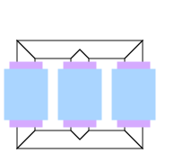

.
Modelica
.
Electrical
.
Machines
.
Icons
.
QuasiStationaryTransformer
Information
This icon is designed for a
quasistationary transformer
model.
Generated at 2020-06-05T07:38:22Z by
OpenModelica 1.16.0~dev-420-gc007a39